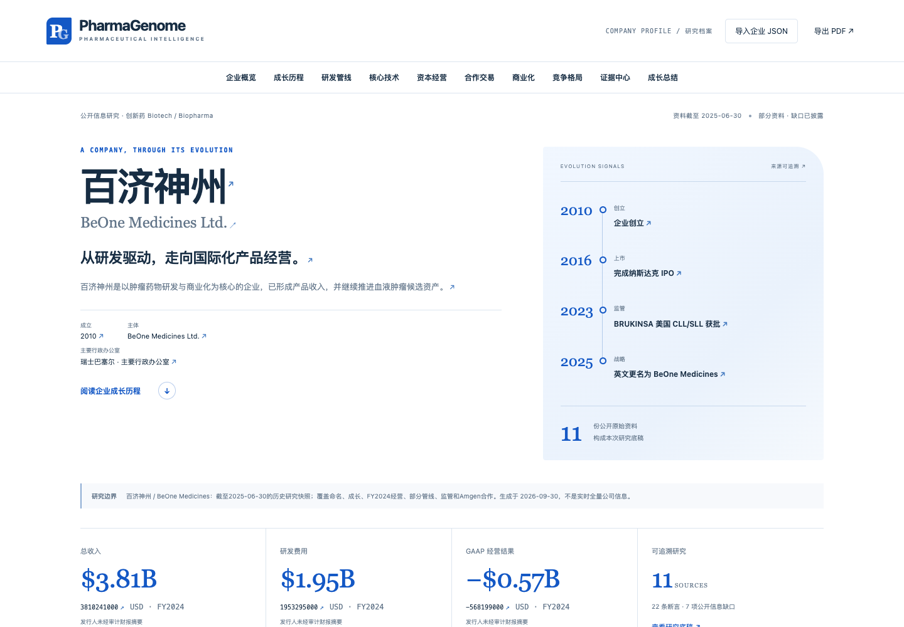

Enterprise / Enterprise Intelligence Skill
PharmaGenome
企业研究有结构，分析结论有出处。
本地演示 · 待部署

OVERVIEW
从真实问题出发。
通过 Agent 工作流连接公开信息研究、证据核验、结构化企业画像与交互看板。
本地作品，尚未配置公开演示。BeOne 案例为截至 2025-06-30 的历史快照，保留研究缺口。
PRODUCT DESIGN
把复杂留在背后。
医药企业资料分散，事实、来源和分析结果需要保持清晰关联。
- ↗企业画像
- ↗证据核验
- ↗管线筛选
PROCESS
连接每一步。
- 公开资料研究
- 证据核验
- 结构化画像
- 交互看板
查看技术与版本说明 ＋
本地作品，尚未配置公开演示。BeOne 案例为截至 2025-06-30 的历史快照，保留研究缺口。
相关技术：Python · React · TypeScript。流程图为项目组织方式的概括，具体实现与运行要求以项目文档为准。
RESULTS & SCOPE
让结果可查看。
以百济神州为案例完成研究到可视化的闭环。展示图片来自真实本地项目。
本地演示 · 待部署